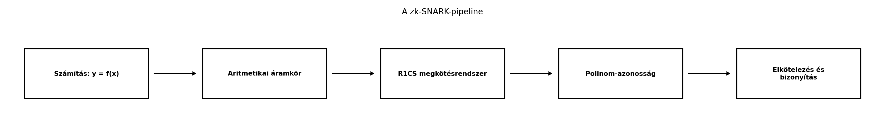

Képzeljük el, hogy egy bankkártyás fizetésnél a kereskedő bizonyítani akarja a fizetési hálózatnak, hogy ismer egy érvényes tranzakció-azonosítót, de magát az azonosítót nem akarja felfedni, mert az ügyfél adatait tartalmazza. Vagy egy blokklánc-csomópont szeretné bizonyítani, hogy több ezer tranzakciót helyesen dolgozott fel, anélkül, hogy minden ellenőrző csomópontnak újra végig kellene számolnia az egészet. Két, elsőre ellentmondó igény: bizonyítsuk egy állítás igazságát, de ne fedjük fel a tanút (witness), és lehetőleg a bizonyítás sokkal rövidebb legyen, mint maga a számítás. A zk-SNARK-ok ezt a problémát oldják meg modern kriptográfiai eszközökkel. A rövidítés feloldása: Zero-Knowledge Succinct Non-Interactive Argument of Knowledge, azaz tömör, nem interaktív, zéró-ismeretű tudásbizonyítás. Ebben az alfejezetben a cél nem a teljes elméleti bizonyítás, hanem az építőkövek áttekintése: hogyan lesz egy számításból aritmetikai áramkör, abból megkötésrendszer, abból polinomazonosság, végül egyetlen rövid bizonyítás. Az A Fiat–Shamir-transzformáció alfejezet adja a nem interaktivitást, a Bilineáris párosítások a polinom-elkötelezés alapját, a Shamir-féle titokmegosztás pedig a Lagrange-interpoláció révén jelenik meg a polinomreprezentációban.
Egy zk-SNARK nem „varázslatként” működik, hanem egy többlépcsős fordítócsővel, amely egy tetszőleges számítást lefordít egyetlen algebrai állítássá. Az alábbi ábra a fő lépéseket mutatja:

A folyamat során a bizonyító (prover) végrehajtja a számítást, rögzíti az összes közbülső értéket mint tanút, majd a rendszer ezeket algebrai egyenletekké alakítja. A verifier a végén csak néhány csoportműveletet és párosítást futtat, ezért az ellenőrzés gyors és rövid inputot igényel. A kulcsszó a tömörség: a bizonyítás mérete nem függ a számítás hosszától: KZG-alapú SNARK-oknál konstans számú csoportelem (néhány száz bájt), STARK-oknál a számítás méretében polilogaritmikus; a fokszám csak a bizonyító munkáját és a setup méretét növeli.
A pontos definícióhoz három algoritmust és három biztonsági tulajdonságot kell rögzítenünk. A definíció informális, de a modern szakirodalom játékalapú változata ezt pontosítja.
Definíció. Egy zk-SNARK egy hármas, amely egy aritmetikai áramkörhöz és egy biztonsági paraméterhez a következőképpen működik.
A három tulajdonság:
A tömörség (succinctness) külön követelmény: mérete legfeljebb polilogaritmikus a áramkör méretében, és a futásideje is hasonlóan rövid. A gyakorlati SNARK-okban a bizonyítás tipikusan néhány száz bájt, függetlenül attól, hogy az áramkör több millió kapuból áll.
Megjegyzés. A „SNARK” szóban az argument arra utal, hogy a tudásbizonyítási helyesség csak számítási feltétel; egy korlátlan számítási képességű támadó elvileg találhat hamis bizonyítást. Ezzel szemben a „proof” kifejezést gyakran azokra a rendszerekre tartják fenn, ahol a helyesség akár korlátlan támadó ellen is áll. A STARK-okban (lásd lentebb) a „T” az átlátszóságot (transparent: nincs megbízható beállítás) jelöli; a STARK is argument, helyessége a hash-függvényen (véletlen orákulum modellben) alapul.
Vegyük a tanulási célban megadott egyszerű állítást. A nyilvános bemenet helyett most legyen maga a titkos tanú; a kimenet nyilvános: . A prover azt állítja, hogy ismer olyan -et, amelyre
A megoldás , mert . A feladat az, hogy ezt a triviális tudást ne fedjük fel, csak bizonyítsuk, hogy ismerjük.
Az aritmetikai áramkör egy irányított, körmentes gráf, amelynek kapui és műveleteket végeznek egy véges test felett. Minden kapu két bemenetet fogad, egy kimenetet ad. A konstansokat is bemenetként kezelhetjük. A fenti kifejezést a következő láncra bonthatjuk:
A értékét összehasonlítjuk a nyilvános -tel; ez a gyakorlatban egy további kapuval vagy közvetlen konstansként jelenik meg. A tanú vektor tartalmazza az összes közbülső értéket és magát -et is. Válasszunk egy kis prímet, például , és a megoldást értékkel. Ekkor , , , mind -ben.
Az R1CS (Rank-1 Constraint System) az áramkör minden szorzási kapuját egyetlen egyenletbe foglalja:
ahol a tanúvektorral azonos dimenziójú vektorok, és a skaláris szorzat. Az összeadási műveletek a vektorokban lineáris kombinációként jelennek meg, ezért elvileg nem igényelnek külön szorzókaput; az alábbi példában az átláthatóság kedvéért mégis külön sorba írjuk őket (egy összeadás-sor szorzással), de például a két összeadás egyetlen sorba is vonható: .
A példa tanúvektora legyen
Az alábbi ábra a teljes példát egyben mutatja: bal oldalon az áramkört, középen a lent részletezett négy R1CS-sort (az , , mátrix -edik sora az , , vektor) a kapunkénti ellenőrzéssel, jobb oldalon pedig az , , értékeket az kapupontokban; alul a harmadik lépés interpolált polinomjai és a hányados.
Az első pozíció mindig , hogy konstansokat is tudjunk használni. Az egyes szorzási kapuk:
Ezzel az állítást négy R1CS sorba fordítottuk. A valódi SNARK-okban a kapuk száma nagy, de az elv ugyanaz: minden nem-lineáris műveletet külön szorzássá bontunk, a lineáris összefüggéseket pedig a vektorokban tároljuk.
Figyelem. Az R1CS-ben minden kapu egy szorzást ír le. Az összeadás „ingyen” van, mert a skaláris szorzatban szerepelhet több változó összege is. Ez a reprezentáció azért hasznos, mert a bizonyítási protokollok a szorzási kapukat tudják hatékonyan összefogni.
A verifier nem akar minden kaput külön ellenőrizni. A trükk az, hogy a vektorokat polinomokká alakítjuk a Shamir-féle titokmegosztás során megismert Lagrange-interpolációval. Minden változóhoz (a -adik koordinátájához) interpolálunk egy polinomot, amelyre minden kapura; hasonlóan és . A tanúval súlyozva , így ; ugyanígy és . A kapukat egy rögzített halmazzal azonosítjuk egy testben, és az interpoláció garantálja, hogy
minden kapura. Ezért az polinom osztható a eltűnő (vanishing) polinommal. Létezik tehát olyan hányados polinom, hogy
Ez az a polinomazonosság, amelyet a bizonyítónak a verifier felé igazolnia kell. A tömörség lényege: a verifier nem ellenőrzi minden pontban, hanem csak néhány véletlen pontban, kihasználva a polinomok fokszámkorlátját. Az A Fiat–Shamir-transzformáció alfejezet pedig ezt a véletlen kihívást teszi nem interaktívvá.
A bizonyító elkötelezi magát az polinomok mellett, hogy azokat később ne tudja megváltoztatni. Erre a célra a KZG-polinom-elkötelezés (Kate–Zaverucha–Goldberg) a leggyakrabban használt megoldás párosításbarát görbék felett; a Bilineáris párosítások és a Párosításbarát görbék és biztonsági szint alfejezetben bemutatott csoportokat használjuk.
Legyen egy bilineáris párosítás, , generátorok. A megbízható beállítás során választunk egy titkos értéket, és kiszámítjuk a következő nyilvános pontokat:
Ezután a titkos -et azonnal töröljük. A pontok lehetővé teszik, hogy bárki elkötelezze magát egy legfeljebb -edfokú polinom mellett:
A bizonyító nem ismeri -et, ezért nem tudja az elkötelezést egy másik polinomra átütni anélkül, hogy a -SDH-feltevést (a megadott hatványokból nem számolható semmilyen -re) megsértené; ez erősebb feltevés a diszkrét logaritmusnál.
A KZG-nyitás során a verifier egy véletlen pontot választ (a gyakorlatban Fiat–Shamirral a -ből származtatjuk), a prover megadja értékét és egy rövid bizonyítást, hogy ez az érték konzisztens a korábbi elkötelezéssel. A konzisztenciát a párosítás segítségével ellenőrizzük; a bizonyítás maga egyetlen csoportelem, ezért rendkívül tömör. A polinomazonosság ellenőrzéséhez a verifier ezután csak behelyettesíti -et az egyenletbe. Ha a prover rossz polinomot kötelezett el, akkor nagy valószínűséggel az ellenőrzés kudarcot vall, mert a polinomok legfeljebb akkor téveszthetik meg a verifier-t, ha az adott pontban megegyeznek; ennek esélye a fokszám és a testméret hányadosa, ami elhanyagolható.
A KZG setupja toxikus hulladékot (toxic waste) termel: a titkos értéket. Ha egy támadó megszerzi -et, akkor hamis bizonyításokat tud gyártani, hiszen tetszőleges elkötelezést képes a kívánt ponton eltalálni. Ezért a setupot ceremóniák keretében hajtják végre: több résztvevő egymás után újraskálázza a pontokat a saját titkával (); ha legalább egyikük törli a saját -jét, az senki számára nem ismert („1-a--ból” bizalom). Az ilyen típusú beállítást powers-of-tau ceremóniának nevezik. Ez nem küszöbmegosztás: a Shamir-féle titokmegosztással ellentétben itt nincs rekonstrukció, és elég egyetlen becsületes résztvevő.
Támadás. Ha a megbízható beállítás során a toxikus hulladék mégis kiszivárog, a támadó hamis bizonyítást készíthet olyan -re, amelyhez nem ismer tanút. Ez a helyességi (soundness) tulajdonság teljes összeomlása. A védekezés: a ceremónia nyilvános, auditálható, és a résztvevők sokasága csökkenti a kompromittálódás esélyét. Emellett léteznek olyan konstrukciók is, amelyek nem igényelnek megbízható beállítást, például a STARK-ok (lásd lentebb).
A Groth16 és a PLONK a két legismertebb SNARK-konstrukció. A Groth16 máig a legkisebb bizonyításmérettel rendelkezik (néhány száz bájt), de a setupja áramkör-specifikus: minden új áramkörhöz új ceremónia kell. A PLONK ezt úgy oldja meg, hogy univerzális és frissíthető setupot használ: egyetlen powers-of-tau beállítás sok különböző áramkörhöz felhasználható, bár a bizonyításméret valamivel nagyobb. Mindkettő párosítást igényel, ezért a Párosításbarát görbék és biztonsági szint alfejezetben tárgyalt BLS12-381-en szokták megvalósítani.
A STARK (Scalable Transparent ARgument of Knowledge) más utat választ: nem használ párosítást, ezért nincs szükség megbízható beállításra, vagyis a rendszer átlátszó. A STARK-ok a polinom-nyitás helyett hash-függvényeket és interaktív oracle-bizonyításokat használnak, az A Fiat–Shamir-transzformáció alfejezet pedig itt is nem interaktívvá alakítja a protokollt. Mivel a biztonságuk nem diszkrét logaritmuson vagy párosításon alapul, hanem a hash-függvény ütközésellenállóságán, a STARK-ok posztkvantum-ellenállóbbnak tekinthetők: Shor algoritmusa nem töri meg őket. A hátrányuk a nagyobb bizonyításméret (több tíz kilobájt), és a nagyobb verifikációs komplexitás, bár ez utóbbi javult a gyorsabb FRI-protokollokkal. A gyakorlatban a STARK-okat olyan helyeken használják, ahol a bizalommentes beállítás fontosabb a méret optimalizálásánál.
A zk-SNARK-ok legismertebb valós alkalmazása a Zcash kriptovaluta pajzsolt tranzakciói. A Zcash lehetővé teszi, hogy a felhasználó úgy költsön el egy összeget, hogy a tranzakcióban nem fedi fel sem a küldőt, sem a címzettet, sem az összeget; a hálózat mégis meg tud győződni arról, hogy a tranzakció érvényes, nincs dupla költés, és a bemeneti érmékhez tartozó tanúk léteznek. A Sapling Groth16-ot használ (közösségi ceremóniával), az újabb Orchard a Halo 2-t, amely nem igényel megbízható beállítást (ellenőrizendő). (A pontos verzió- és protokollnevek ellenőrzendők.)
A másik nagy alkalmazási terület a zkRollup-ok. Egy blokklánc (például Ethereum) tranzakcióinak többsége nem a fő láncon fut: a tranzakciók végrehajtása láncon kívül történik, és csak a bizonyítás (és a tömörített adat) kerül a fő láncra. A rollup üzemeltetője végrehajt sok tranzakciót, majd egyetlen zk-SNARK vagy zk-STARK bizonyítással igazolja, hogy az új állapot az előző állapotból a tranzakciók szabályos alkalmazásával állt elő. A verifier csak ezt a rövid bizonyítást ellenőrzi, így a fő lánc terhelése drámaian csökken. Ez a minta pontosan a tömörség gyakorlati haszna: a számítási munka a bizonyítónál marad, a verifikáció olcsóvá válik.
1. feladat (A)
Definiáld a zk-SNARK három algoritmusát és a teljesség, tudásbizonyítási
helyesség, zéró-ismeret tulajdonságokat. Adj rövid példát mindegyik
sérülésére.
2. feladat (A)
Alakítsd át az
kifejezést aritmetikai áramkörré, és írd fel az R1CS sorait a
tanúvektorral, ahol
és
.
3. feladat (B)
Adott a
prímtest. Határozd meg, hány megoldása van az
állításnak
-ben.
Írd le a kapukat úgy, hogy a kimenet a nyilvános
legyen.
4. feladat (B)
Magyarázd el, hogyan lesz a R1CS-ből polinomazonosság. Mi a szerepe a
polinomnak? Miért elég a verifiernek csak egy pontban ellenőriznie?
5. feladat (C)
Érvelj amellett, hogy a Fiat–Shamir-transzformáció miért alkalmas a
KZG-nyitás nem interaktívvá tételére. Milyen plusz tulajdonságot
biztosít a hash-függvény a véletlen kihívással szemben?
6. feladat (D)
Tervezz egy (játék szintű) „alulhatározott” SNARK-áramkört, amely azt
kellene bizonyítsa, hogy ismersz egy
-et,
amelyre
,
de a fejlesztő elfelejti összekötni a szorzás kimenetét a nyilvános
-nal.
Add meg a kielégítő tanút
-val,
és javítsd ki az áramkört.
1. feladat (A)
A definíciót lásd a fenti Definíció-ban. Sérülés: ha a
completeness sérül, a becsületes bizonyítást a verifier elutasíthatja.
Ha a soundness sérül, akkor egy támadó tanú nélkül is érvényes
bizonyítást ad. Ha a zéró-ismeret sérül, a bizonyításból kiderülhet a
tanú.
2. feladat (A)
Az áramkör:
,
,
.
A tanúvektor
.
R1CS sorok:
3. feladat (B)
,
tehát az egyenlet
,
azaz
.
Az
értékek behelyettesítésével (kis Pythonnal ellenőrizve) egyetlen gyök
van:
,
mert
.
A kapuk változatlanok, a nyilvános kimenet
.
4. feladat (B)
A R1CS sorokat pontonként interpoláljuk polinomokká: minden
vektorból
,
-ből
,
-ből
lesz. A
polinom a kapuk pontjain nulla. Az
polinom szintén nulla ezeken a pontokon, ezért osztható
-vel;
a hányados
.
A verifier nem minden pontban ellenőrzi az azonosságot, hanem csak egy
véletlen
pontban, mert két különböző, korlátos fokszámú polinom legfeljebb a
fokszámnyi pontban egyezhet meg. A nagy testméret miatt a véletlen
találat esélye elhanyagolható.
5. feladat (C)
A Fiat–Shamir-transzformáció a KZG-nyitásnál a verifier véletlen
kihívását a hash-függvény kimenetével helyettesíti, amelyet a prover
korábbi üzeneteiből (elkötelezésből) származtatnak. A hash-függvény
egyenletes eloszlást ad, és mivel a prover nem tudja előre megjósolni a
kihívást, a protokoll ugyanolyan biztonságos marad, mint az interaktív
változatban, feltéve, hogy a hash-t véletlen orákulumként modellezzük.
Az A Fiat–Shamir-transzformáció alfejezet
részletesen tárgyalja ezt.
6. feladat (D)
Az áramkör két kényszere:
és
(nyilvános), de a fejlesztő elfelejti összekötni
-t
-nal.
Ekkor
minden kényszert kielégít, így
-val
érvényes bizonyítás készül. Javítás: a
kényszer felvétele, azaz
egyetlen R1CS-sorként.
A zk-SNARK-ok tömör, nem interaktív, zéró-ismeretű tudásbizonyítások, amelyek lehetővé teszik egy számítás helyességének igazolását a tanú felfedése nélkül. A pipeline: a számítást aritmetikai áramkörré bontjuk, majd R1CS-megkötésrendszerré alakítjuk, a vektorokat polinomokká interpoláljuk, és a kapcsolatokat egyetlen polinomazonosságra vezetjük vissza. A KZG-polinom-elkötelezés párosításokkal (BLS12-381) teszi a bizonyítást tömörré, de megbízható beállítást igényel, amelynek toxikus hulladéka a titkos . A Groth16 nagyon rövid, de áramkör-specifikus setupot, a PLONK univerzálisat használ; a STARK-ok hash-alapon, átlátszóan, posztkvantum-barátabb módon működnek, cserébe nagyobb bizonyítással. Továbbvitt eredmény: ezt az áttekintést használjuk a Zero-knowledge és aláírások alkalmazásai alfejezetben a gyakorlati felhasználások (Zcash, rollupok) mélyebb tárgyalásához, valamint a Továbblépés: kutatás, gyakorlat és pályák a kriptográfiában alfejezetben a kutatási irányok felvázolásához.
Az alfejezet klasszikus fogalmakat ismertet: a zk-SNARK definícióját, az R1CS-reprezentációt, a KZG-elkötelezést, a Groth16/PLONK/STARK különbségeket. Az irodalom stabil, de a gyorsan fejlődő terület miatt a konkrét proof-méretek (pl. Groth16 kb. 128 bájt, PLONK kb. 400-500 bájt, STARK 10-100 kB) irányszámok, amelyeket az aktuális implementációk specifikációiból érdemes ellenőrizni. A Zcash Sapling/Orchard protokollváltozatainak pontos megnevezése és a zkRollup-projektek listája szintén ellenőrzendő. A KZG kötési biztonsága a -SDH-feltevésen múlik (ez erősebb a diszkrét logaritmusnál), a párosításbarát görbék paramétereit a Párosításbarát görbék és biztonsági szint alfejezetből vettük.